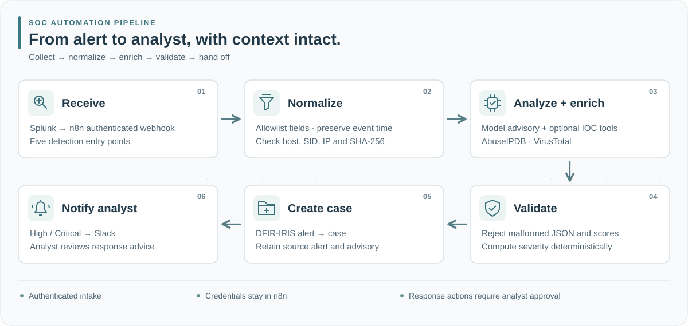

Project overview
One alert.
A traceable investigation handoff.
See how automation carries event evidence, indicator context and review steps into an investigation case. Follow the architecture here, then explore the 15-run comparison of speed, quality and analyst effort.
Offline validation snapshot · 16 October 202601 / System flow
A reviewable alert-to-case handoff
Input checks come before model analysis. Report validation separates an advisory from the payloads prepared for downstream services.

Preserve the source
Carry the Splunk SID, host and event time into the alert payload. Bind indicator tools to normalized fields, not model-selected replacements.
Preserve analyst control
High/Critical scores take the Slack branch after escalation. Recommendations remain advisory; response approval belongs to the analyst.
02 / Detection inputs
Five routes, one field contract
Each request carries one result object, a stable SID, a source host and an unambiguous event time. Read the SPL examples and interpretation guidance.
| Route | Telemetry | Analyst focus |
|---|---|---|
| IP | Windows Security 4625 | Failures by host, account and source address |
| Hash | Sysmon process creation | Image context and validated SHA-256 reputation |
| Scan | Windows Firewall drops | Port spread, frequency and client context |
| Admin | Windows Security 4720 / 4732 | Account changes, membership and authorization |
| PowerShell | Sysmon command lines | Flags, parent image, user and execution intent |
03 / Local checks
Deterministic checks, no API keys
The 67-test offline suite checks timestamp parsing, field limits, indicator policy, model-response schema, severity boundaries, workflow links, source-bound indicators, classification defaults, tags and embedded-code consistency.
node --test tests/offline.test.cjsInput-boundary checks
Missing identifiers, invalid or ambiguous dates, nested values, oversized fields, invalid hashes and disallowed IP ranges are checked against the normalizer.
Report-formatting checks
Fixed fixtures exercise strict JSON validation, numeric score bounds, deterministic severity, Slack escaping and the expected IRIS payload fields.
Workflow-export checks
The suite checks graph targets, webhook connections, the inactive setting, credential/TLS safeguards and equality between readable JavaScript and embedded Code nodes.
04 / Deployment path
Configure, then trace one alert
- Prepare Windows telemetry, Splunk, n8n and DFIR-IRIS in an approved lab.
- Run the offline suite, then import the workflow inactive.
- Bind credentials, trusted service URLs, IRIS IDs and the Slack channel.
- Send one authorized alert to an authenticated test webhook.
- Inspect tool traces, IRIS identifiers and notification delivery before activation.
Follow the acceptance checklist · View the screenshot walkthrough